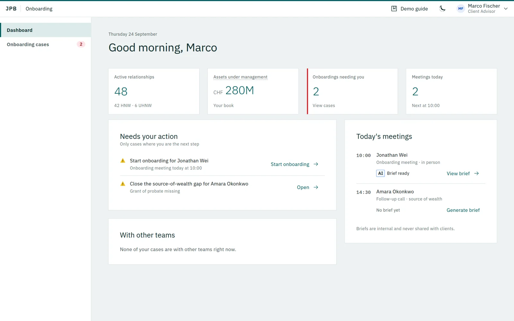

148 steps across 20+ systems, mapped end to end for the first time.
Target
35–55 ≤14
days for the most complex cases
- Situation
JPB didn't have a current, complete picture of what onboarding a private-banking client looked like end to end: 9 phases, 148 steps, 20+ systems.
- Task
Map the whole journey and find where the time actually goes.
- Action
Ten weeks of shadowing, diary studies, 18 interviews and a separate 120-person survey. One advisor summed it up:
I onboard a client and immediately switch between five systems.
- Result
Nine proposed interventions, aimed at bringing the most complex cases down from 35–55 days to under two weeks.
